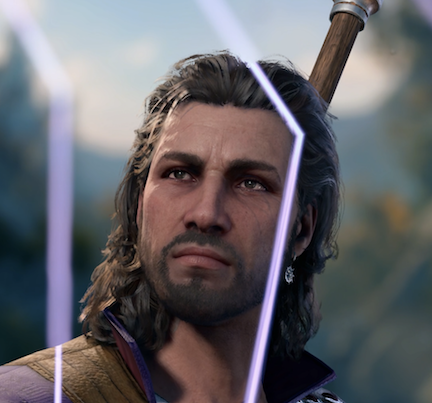

STR: 8 | DEX: 13 | CON: 14 | INT: 17 | WIS:10 | CHA: 13
Gale is a Human Wizard that can join your party and contribute powerful spells in combat. You can start his questline titled "The Wizard of Waterdeep" for his backstory. Gale is a wizard prodigy whose love for a goddess made him attempt a dread feat no mortal should. Blighted by the forbidden magic of ancient Netheril, Gale strives to undo the corruption that is overtaking him and win back his goddess’ favour before he becomes a destroyer of worlds.